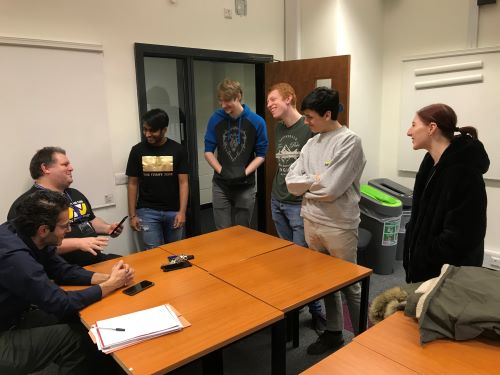
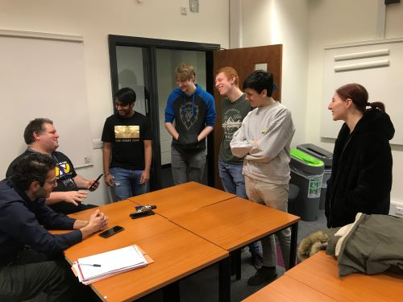

Partner with Cantor College
Unlock Expertise, Innovation, and Growth. At Cantor College, we believe in the power of collaboration between education and industry. Our College offers a range of specialized services designed to support businesses in achieving their goals through cutting-edge expertise, innovation, and tailored solutions. With a focus on Computing, Design, and Technology, we are uniquely positioned to help your business thrive in an increasingly digital world.
Our Services
1. Custom Training and Development Programs: Empower your workforce with skills that matter. Our faculty can develop custom training programs that address your business's specific needs, whether in advanced computing technologies, creative design, or the latest in tech innovation. We offer flexible learning options, including on-site workshops, online modules, and blended learning experiences.
2. Research and Development Partnerships: Leverage the talent and creativity of our students and faculty by partnering with Cantor College on research and development projects. Whether you’re looking to explore new technologies, innovate your product line, or solve complex technical challenges, our R&D team is ready to collaborate with you.
3. Design and Technology Consultancy: Our experienced professionals and top-tier students can provide consultancy services to help you with a variety of projects, from web development and software engineering to product design and user experience optimization. We offer fresh perspectives and innovative approaches tailored to your business.
4. Internships and Graduate Recruitment: Gain access to a pool of highly skilled and motivated students ready to contribute to your business. Our internship and recruitment services can connect you with top talent in computing, design, and technology, providing you with candidates who are equipped with the latest industry knowledge and practical experience.
5. Event Hosting and Sponsorship: Cantor College hosts a range of events throughout the year, including hackathons, design challenges, and technology expos. We offer businesses the opportunity to sponsor events or collaborate in their organization, giving you direct access to the brightest minds in the field and the chance to showcase your brand to our community.
Why Partner with Cantor College?
• Cutting-Edge Expertise: Our programs are at the forefront of industry trends, ensuring that our services reflect the latest advancements in technology and design.
• Innovation at the Core: We foster a culture of creativity and problem-solving, making us the ideal partner for businesses seeking innovative solutions.
• Tailored Solutions: We understand that every business is unique. Our services are customized to meet your specific objectives and challenges.
• Future-Ready Talent: Our students are trained to excel in the modern workplace, equipped with both theoretical knowledge and practical skills.
Get in Touch
Ready to explore how Cantor College can help your business grow? Contact our Business Services team today to discuss your needs and learn more about our offerings. We look forward to working with you to achieve your business goals.